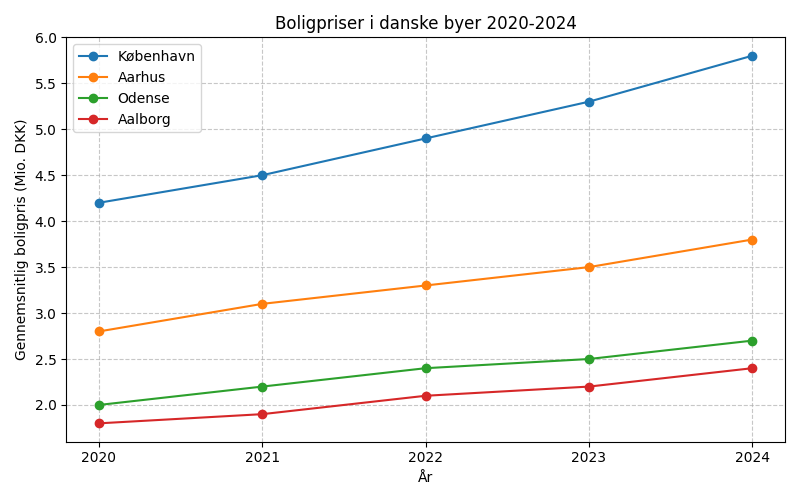
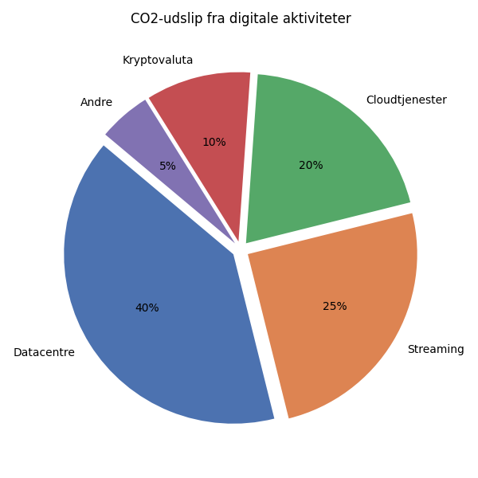
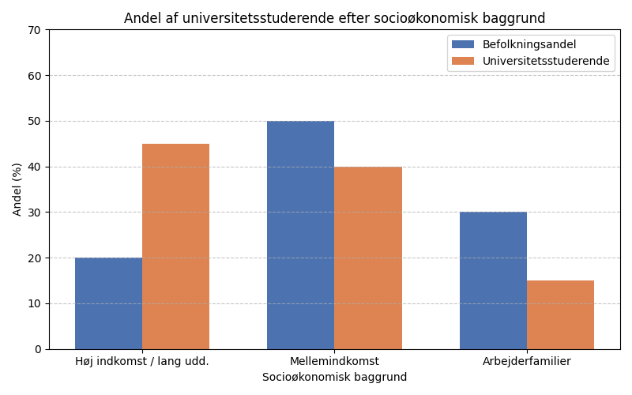

This practice test was generated by Den Frie Prøvebank and is unofficial. Den Frie Prøvebank's ability to validate how well its tests match the official tests, in terms of content and structure, is limited. Users should seek guidance from official teaching institutions as to the structure and content of the exams in question.
Ingen hjælpemidler tilladt
Tekst A: Grøn energi i Danmark
Danmark er blevet verdensførende inden for vindenergi. I 2024 kom 60% af landets elektricitet fra vedvarende energikilder, primært vindmøller både på land og til havs. Regeringen har sat mål om at være CO2-neutrale inden 2030. Ørsteds offshore vindparker producerer nu strøm til over 3 millioner husstande. Investeringerne i grøn teknologi har skabt over 50.000 arbejdspladser siden 2020.
Tekst B: Cirkulær økonomi
Danske virksomheder omstiller til cirkulære forretningsmodeller. Novo Nordisk genbruger 95% af deres produktionsaffald. LEGO har investeret 400 millioner kroner i bæredygtige materialer. Carlsberg har reduceret deres CO2-udslip med 30% siden 2015 gennem optimering af bryggeprocesser og emballage.
Tekst C: Grønne transportløsninger
København har verdens længste cykelsti-netværk med over 400 km dedikerede cykelstier. 45% af alle arbejdsrejser sker på cykel. Elektriske busser erstatter dieselbusser - 100% af offentlig transport skal være emissionsfri inden 2030. DSB har investeret i nye elektriske tog, der reducerer energiforbrug med 20%.
Tekst D: Bæredygtig byggeri
Byggebranchen står for 40% af Danmarks CO2-udslip. Nye byggeforskrifter kræver energiklasse A fra 2025. Genbrug af byggematerialer er steget med 300% siden 2020. Træbyggeri oplever renaissance - træ kan binde CO2 og reducere byggeriets klimaaftryk betydeligt.
Tekst E: Grøn forskning og innovation
Danmarks Tekniske Universitet leder flere EU-projekter inden for grøn teknologi. Forskningsinvesteringer i cleantech er fordoblet siden 2020. Start-ups inden for klimateknologi tiltrækker internationale investorer. Aalborg Universitet udvikler nye løsninger til energilagring.
Sæt bogstavet for den rigtige sætning i hvert felt.
Digitaliseringen har forandret det danske uddannelsessystem fundamentalt de seneste ti år. Fra folkeskole til universitet har teknologien åbnet nye muligheder for læring og undervisning.
(1) ________
Folkeskolerne har investeret massivt i digitale læremidler. Hver elev har nu adgang til en computer eller tablet, og lærerne bruger interaktive smartboards i næsten alle klasselokaler. Dette har gjort undervisningen mere dynamisk og engagerende.
(2) ________
Gymnasierne har udviklet hybride undervisningsformer, hvor fysisk og digital undervisning kombineres. Eleverne kan følge forelæsninger online, deltage i virtuelle eksperimenter og samarbejde på tværs af skoler gennem digitale platforme.
(3) ________
Universiteterne har været pionerer inden for online uddannelse. Mange kurser tilbydes nu både som campusbaseret og fjernundervisning. Studerende kan vælge mellem forskellige læringsformater afhængigt af deres behov og livssituation.
(4) ________
Erhvervsuddannelserne har integreret virtual reality og augmented reality i praktisk træning. Elever kan nu øve sig i simulerede miljøer, før de møder rigtige arbejdssituationer, hvilket øger både sikkerhed og læringsudbyttet.
(5) ________
Digitaliseringen har også skabt nye udfordringer. Ikke alle studerende har samme adgang til teknologi hjemmefra, hvilket kan skabe ulighed. Desuden kræver digital undervisning nye kompetencer fra både lærere og studerende.
Afsnit 1
Corona-pandemien accelererede den digitale transformation markant. Skolerne blev tvunget til at udvikle fjernundervisningsløsninger på rekordtid, hvilket bragte dem flere år frem i digitaliseringsprocessen.
De økonomiske omkostninger ved digitalisering har været betydelige. Staten har investeret over 5 milliarder kroner i digitale løsninger til uddannelsessektoren siden 2020.
Lærernes holdning til teknologi har ændret sig dramatisk. Hvor mange tidligere var skeptiske, er langt de fleste nu positive over for digitale værktøjer i undervisningen.
Afsnit 2
Særlige indsatser er blevet iværksat for at støtte ældre lærere i omstillingen. Kurser i digital pædagogik er blevet obligatoriske for alle undervisere over 50 år.
Dog har overgangen ikke været problemfri. Mange lærere har oplevet stress og frustration over de hurtige teknologiske ændringer, hvilket har krævet omfattende efteruddannelse.
Forældrenes rolle i uddannelsen er blevet vigtigere. De skal nu hjælpe deres børn med at navigere i digitale læringsplatforme og sikre, at teknologien fungerer hjemme.
Afsnit 3
Internationale samarbejder er blevet lettere gennem digitale platforme. Danske gymnasisaelever kan nu deltage i fælles projekter med unge fra hele Europa uden at rejse.
Karaktersystemet er også blevet påvirket af digitaliseringen. Mange eksamenformer er blevet ændret for at afspejle de nye færdigheder, som eleverne skal mestre.
Private udbydere har fået større indflydelse på uddannelsesmarkedet. Mange skoler køber nu undervisningsløsninger fra tech-virksomheder frem for at udvikle egne systemer.
Afsnit 4
Forskningssamarbejdet mellem universiteter er blevet intensiveret gennem digitale konferencer og virtuelle laboratorier. Videnskabelige opdagelser kan nu deles øjeblikkeligt på tværs af kontinenter.
Studenterorganisationerne har måttet tilpasse sig det digitale landskab. Sociale arrangementer og møder foregår nu ofte online, hvilket både har fordele og ulemper for fællesskabet.
Bibliotekerne har genopfundet deres rolle i den digitale tidsalder. De fungerer nu som teknologiske læringshubs med 3D-printere, VR-udstyr og digitale værktøjer til studenternes rådighed.
Afsnit 5
Fremtiden vil bringe endnu mere avanceret teknologi til uddannelse. Kunstig intelligens vil kunne personalisere læring for hver enkelt studerende og give realtids feedback på præstationer.
Miljøpåvirkningen af digital undervisning er blevet et voksende fokusområde. Skolerne arbejder på at reducere energiforbruget fra de mange computere og servere.
Internationale standarder for digital uddannelse er under udvikling. Danmark deltager aktivt i EU-initiativer for at sikre sammenlignelighed på tværs af landegrænser.
Automatisering og kunstig intelligens omformer det danske arbejdsmarked i et hidtil uset tempo. Eksperter forudser, at op til 40% af nuværende job kan blive automatiseret inden for de næste to årtier. Denne transformation skaber både muligheder og udfordringer for danske arbejdstagere.
Teknologien eliminerer ikke kun job - den skaber også nye. Efterspørgslen efter data-analytikere, AI-specialister og cybersikkerhedseksperter er eksploderet. Samtidig opstår helt nye erhverv, som vi endnu ikke kan forestille os. Historien viser, at teknologiske revolutioner altid har ført til flere job, selvom de ofte er fundamentalt anderledes end dem, der forsvinder.
Den danske model med flexicurity - kombinationen af fleksible ansættelsesforhold og stærke sociale sikkerhedsnet - kan være et aktiv i denne omstilling. Arbejdstagere kan lettere skifte mellem job og brancher, mens det offentlige sikrer indkomst og omskoling under overgangen. Dette giver danske virksomheder frihed til at innovere uden frygt for sociale uroligheder.
Uddannelsessystemet står over for massive udfordringer. Kompetencer, der er relevante i dag, kan være forældede om få år. Livslang læring bliver en nødvendighed, ikke et valgfrit tillæg. Universiteter og erhvervsskoler må udvikle mere fleksible, modulære programmer, der kan tilpasses hurtigt skiftende markedsbehov.
Geografiske forskelle vil sandsynligvis forstærkes. Højt uddannede job koncentreres i storbyerne, hvor tech-virksomheder etablerer sig. Ruralne områder risikerer at blive efterladt, da mange traditionelle industrijob automatiseres væk. Dette kræver målrettede politiske indsatser for at sikre en mere ligelig udvikling.
Den demografiske udvikling komplicerer billedet yderligere. Med en aldrende befolkning og færre unge på arbejdsmarkedet kan automatisering faktisk være nødvendig for at opretholde velfærdsstaten. Robotter kan udføre det arbejde, som der simpelthen ikke er mennesker nok til.
Fagforeningerne skal genopfinde deres rolle. I stedet for kun at beskytte eksisterende job må de fokusere på at sikre deres medlemmer bedst mulige overgang til nye erhverv. Dette kræver nye former for kollektive forhandlinger og partnerskaber med uddannelsesinstitutioner.
Sæt en cirkel om det rigtige svar.
Hvad er hovedårsagen til de store forandringer på det danske arbejdsmarked?
Demografiske ændringer og færre unge arbejdstagere
Automatisering og kunstig intelligens
Globalisering og øget konkurrence fra udlandet
Hvor stor en andel af nuværende job kan ifølge eksperter blive automatiseret?
Op til 25% inden for de næste to årtier
Op til 40% inden for de næste to årtier
Op til 60% inden for de næste to årtier
Hvad karakteriserer den danske flexicurity-model?
Stabile ansættelsesforhold og lavt sikkerhedsnet
Fleksible ansættelsesforhold og stærke sociale sikkerhedsnet
Midlertidige kontrakter og private forsikringer
Hvilken hovedudfordring står uddannelsessystemet over for ifølge teksten?
Mangel på finansiering til nye teknologier
Kompetencer bliver hurtigt forældede og kræver konstant opdatering
For få studerende vælger tekniske uddannelser
Hvad vil sandsynligvis ske med geografiske forskelle på arbejdsmarkedet?
De vil formindskes på grund af remote work
De vil forblive uændrede
De vil sandsynligvis forstærkes med koncentration i storbyerne
Det danske landbrug står over for (1) ______ udfordringer som følge af klimaforandringerne. Temperaturstigninger og (2) ______ vejrmønstre påvirker både afgrøder og husdyrproduktion på måder, som landmændene ikke tidligere har oplevet.
Ekstreme vejrbegivenheder som tørke, kraftig regn og (3) ______ vintervejr bliver mere almindelige. Disse forhold gør det svært for landmændene at planlægge deres produktion og kan (4) ______ til betydelige økonomiske tab. Mange gårde må investere i nye teknologier som vandingssystemer og klimastyrede stalde.
Samtidig åbner klimaforandringerne dog også nye (5) ______. Varmere temperaturer gør det muligt at dyrke afgrøder, som tidligere ikke kunne (6) ______ i Danmark. Vinproduktion er eksempelvis blevet en voksende industri, særligt på Sjælland og Bornholm.
Landbruget må også tilpasse sig (7) ______ forventninger til bæredygtighed. Forbrugerne efterspørger produkter med lavere klimaaftryk, hvilket (8) ______ innovation inden for økologisk produktion og alternative proteiner. Mange landmænd eksperimenterer nu med insektproduktion og plantebaserede alternativer.
Forskere arbejder på at udvikle (9) ______ afgrødesorter, der er mere resistente over for ekstreme vejrforhold. Gennem avl og genteknik skabes planter, der kan klare både tørke og oversvømmelser bedre end (10) ______ sorter.
| 1 | a. mindre | b. betydelige | c. tekniske | d. internationale |
| 2 | a. milde | b. forudsigelige | c. uforudsigelige | d. stabile |
| 3 | a. mildt | b. normalt | c. forudsigeligt | d. ustabilt |
| 4 | a. hjælpe | b. føre | c. bidrage | d. resultere |
| 5 | a. problemer | b. muligheder | c. teknologier | d. markeder |
| 6 | a. sælges | b. transporteres | c. trives | d. eksporteres |
| 7 | a. faldende | b. stigende | c. uændrede | d. internationale |
| 8 | a. forhindrer | b. driver | c. begrænser | d. reducerer |
| 9 | a. billigere | b. traditionelle | c. udenlandske | d. klimaresistente |
| 10 | a. traditionelle | b. moderne | c. importerede | d. økologiske |
Alle ordbøger er tilladt
Grafik:

Manchet: Boligpriserne i danske byer er steget dramatisk de seneste år. Unge mennesker har svært ved at komme ind på boligmarkedet, mens ældre boligejere oplever store værdistigninger på deres ejendomme.
Opgave: Skriv en sammenhængende tekst på minimum 400 ord, hvor du:
Grafik:

Manchet: Den digitale revolution har gjort vores liv lettere, men den har også en skjult miljøpris. Datacentre og digital infrastruktur forbruger enorme mængder energi og bidrager betydeligt til klimaforandringerne.
Opgave: Skriv en sammenhængende tekst på minimum 400 ord, hvor du:
Grafik:

Manchet: Trods gratis uddannelse i Danmark viser nye undersøgelser, at unge fra familier med høj indkomst og lang uddannelse stadig har meget større sandsynlighed for at tage en videregående uddannelse end unge fra arbejderfamilier.
Opgave: Skriv en sammenhængende tekst på minimum 400 ord, hvor du:
Brug disse sider til at skrive din skriftlige opgave.
Stikord til inspiration:
Stikord til inspiration:
Stikord til inspiration:
This practice test was generated by Den Frie Prøvebank and is unofficial. Den Frie Prøvebank's ability to validate how well its tests match the official tests, in terms of content and structure, is limited. Users should seek guidance from official teaching institutions as to the structure and content of the exams in question.